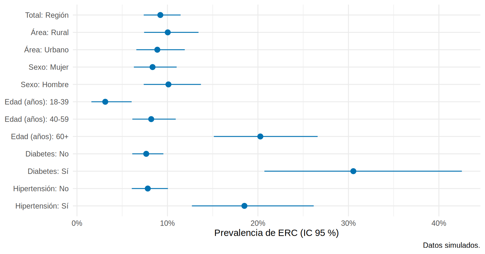
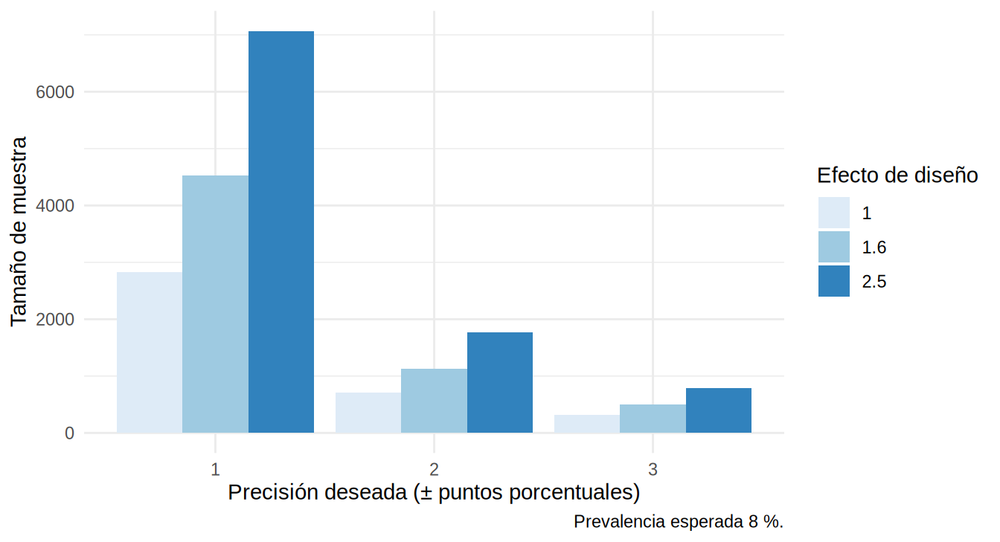

library(tidyverse)
library(survey)
source("R/funciones_extra_cap456.R") # prev_svy(), tabla_svy_categ(), tabla_or_svy()
enc <- read_csv("Bases/encuesta_erc.csv", show_col_types = FALSE) |>
mutate(gedad = cut(edad, c(17, 39, 59, 100), labels = c("18-39", "40-59", "60+")),
sexo = factor(sexo, c("F", "M"), c("Mujer", "Hombre")),
diabetes_f = factor(diabetes, 0:1, c("No", "Sí")),
hta_f = factor(hta, 0:1, c("No", "Sí")),
erc_f = factor(erc, 0:1, c("Sin ERC", "Con ERC")))
dis <- svydesign(ids = ~cluster, strata = ~area, weights = ~peso, data = enc, nest = TRUE)Caso integrado: prevalencia de ERC en la región y tamaño de muestra
Nota🩺 Escenario
La Dirección de Salud te pide el informe final: ¿cuál es la prevalencia de ERC en los adultos de la región, en quiénes es mayor y qué factores se asocian? Además, el año próximo quieren repetir la encuesta en otra región: ¿a cuántas personas hay que medir? Este subcapítulo reúne todo el capítulo en un flujo de trabajo reproducible, con las tres tablas clásicas de un artículo de encuestas: características (Tabla 1), comparación por grupos (Tabla 2) y regresión (Tabla 3).
Lo que vamos a hacer
- Dejar por escrito el diseño y declararlo.
- Tabla 1: características de la muestra, sin ponderar y ponderadas.
- Tabla 2: prevalencia de ERC por grupos, con prueba que respeta el diseño.
- Tabla 3: OR crudos y ajustados con
svyglm(). - Tamaño de muestra para la próxima encuesta, y qué debe decir tu informe.
Paso 1: el diseño, escrito antes de recolectar
| Elemento | Decisión |
|---|---|
| Población objetivo | Adultos ≥ 18 años residentes de la región |
| Marco | Lista de 600 comunidades (360 urbanas, 240 rurales), con su tamaño |
| Diseño | Bietápico estratificado: 30 comunidades por estrato y 25 adultos por comunidad |
| Sobremuestreo | Zona rural (casi el doble de su proporción poblacional) para estimar por área |
| Desenlace | ERC (TFGe < 60 o albuminuria ≥ 30 mg/g persistente) |
| Análisis | survey, con pesos de muestreo y ajuste por no respuesta |
Paso 2: Tabla 1, características de la muestra
Una Tabla 1 de encuesta se reporta de dos maneras: los conteos sin ponderar (cuántas personas se midieron de verdad) y los porcentajes ponderados con su IC (lo que representan en la población). tabla_svy_categ() (en R/funciones_extra_cap456.R) arma ambas:
tabla1 <- tabla_svy_categ(enc, dis, c("area", "sexo", "gedad", "diabetes_f", "hta_f", "erc_f"))
tabla1 |> mutate(across(where(is.numeric), \(x) round(x, 1)))# A tibble: 13 × 7
variable nivel n_sin_pond pct_sin_pond pct_pond ic_inf ic_sup
<chr> <chr> <dbl> <dbl> <dbl> <dbl> <dbl>
1 area Rural 750 50 29 28.1 29.9
2 area Urbano 750 50 71 70.1 71.9
3 sexo Mujer 765 51 50.9 47.8 54
4 sexo Hombre 735 49 49.1 46 52.2
5 gedad 18-39 406 27.1 29.2 26.3 32.4
6 gedad 40-59 756 50.4 50.1 47.1 53
7 gedad 60+ 338 22.5 20.7 18.3 23.3
8 diabetes_f No 1402 93.5 93.2 91.5 94.5
9 diabetes_f Sí 98 6.5 6.8 5.5 8.5
10 hta_f No 1299 86.6 87 84.4 89.2
11 hta_f Sí 201 13.4 13 10.8 15.6
12 erc_f Sin ERC 1359 90.6 90.8 88.5 92.6
13 erc_f Con ERC 141 9.4 9.2 7.4 11.5Mira la primera fila: sin ponderar, el 50 % de la muestra es rural; ponderado, solo el 29 %. Esa es la diferencia entre describir a quienes midiste y describir a la región. Para una variable numérica, la media ponderada con su IC:
media_edad <- svymean(~edad, dis)
c(sin_ponderar = mean(enc$edad), ponderada = as.numeric(coef(media_edad)),
IC_inf = confint(media_edad)[1], IC_sup = confint(media_edad)[2]) |> round(1)sin_ponderar ponderada IC_inf IC_sup
48.6 47.9 47.0 48.8
Tip💡 Con el paquete
gtsummary (no se ejecuta aquí)
El autor produce estas tablas con gtsummary, que da la tabla ya formateada (para el artículo). Es la misma idea que tabla_svy_categ():
library(gtsummary)
# a) Sin ponderar: lo que se midió
tbl_summary(enc, include = c(area, sexo, gedad, diabetes_f, hta_f, erc_f))
# b) Ponderada, con IC, tomando el diseño
dis |>
tbl_svysummary(include = c(area, sexo, gedad, diabetes_f, hta_f, erc_f)) |>
add_ci()Paso 3: Tabla 2, prevalencia por grupos
La Tabla 2 compara el desenlace entre grupos. Con el diseño, la prevalencia se calcula dentro de cada subpoblación (subset(), 6.3) y el contraste usa svychisq(), la versión de la prueba χ² que respeta pesos y conglomerados (corrección de Rao-Scott):
factores <- tribble(~variable, ~etiqueta,
"area", "Área",
"sexo", "Sexo",
"gedad", "Edad (años)",
"diabetes_f", "Diabetes",
"hta_f", "Hipertensión")
tabla2 <- map_dfr(factores$variable, \(v) {
p <- svychisq(as.formula(paste("~ erc +", v)), dis)$p.value # prueba que respeta el diseño
prev_svy(dis, "erc", por = v) |>
mutate(p_valor = if_else(row_number() == 1, p, NA_real_))
}) |>
left_join(factores, by = "variable") |>
mutate(across(c(prevalencia, inf, sup), \(x) round(100 * x, 1)),
p_valor = scales::pvalue(p_valor, accuracy = 0.001)) |>
select(etiqueta, nivel, prevalencia, inf, sup, p_valor)
tabla2# A tibble: 11 × 6
etiqueta nivel prevalencia inf sup p_valor
<chr> <chr> <dbl> <dbl> <dbl> <chr>
1 Área Rural 10 7.4 13.4 0.556
2 Área Urbano 8.9 6.6 11.9 <NA>
3 Sexo Mujer 8.4 6.3 11 0.343
4 Sexo Hombre 10.1 7.4 13.7 <NA>
5 Edad (años) 18-39 3.1 1.6 6 <0.001
6 Edad (años) 40-59 8.2 6.1 10.9 <NA>
7 Edad (años) 60+ 20.3 15.1 26.6 <NA>
8 Diabetes No 7.7 6.1 9.5 <0.001
9 Diabetes Sí 30.5 20.7 42.5 <NA>
10 Hipertensión No 7.8 6.1 10.1 <0.001
11 Hipertensión Sí 18.5 12.7 26.2 <NA> Lectura: la prevalencia de ERC aumenta con la edad, y es mayor en personas con diabetes o hipertensión. No difiere de forma apreciable por sexo ni por área en esta muestra. Recuerda que, en la región completa, la zona rural sí tiene más ERC (10.0 % frente a 6.6 %), pero con 1 500 adultos y 60 comunidades la encuesta no tiene la potencia para detectar esa diferencia: “no significativo” no es “no existe”.
total <- prev_svy(dis, "erc") |> mutate(etiqueta = "Total", nivel = "Región")
grafico <- bind_rows(total, map_dfr(factores$variable, \(v) prev_svy(dis, "erc", por = v) |>
left_join(factores, by = "variable"))) |>
mutate(fila = paste0(etiqueta, ": ", nivel))
ggplot(grafico, aes(prevalencia, fct_rev(fct_inorder(fila)), xmin = inf, xmax = sup)) +
geom_pointrange(color = "#0072B2") +
scale_x_continuous(labels = scales::percent_format(accuracy = 1)) +
labs(x = "Prevalencia de ERC (IC 95 %)", y = NULL, caption = "Datos simulados.") +
theme_minimal(base_size = 11)
Paso 4: Tabla 3, factores asociados (OR crudos y ajustados)
La Tabla 3 muestra, para cada factor, el OR crudo (modelo con ese factor solo) y el OR ajustado (modelo con todos). Ambos con el diseño (svyglm()):
tabla3 <- tabla_or_svy(dis, "erc", c("diabetes", "hta", "I(edad/10)", "sexo", "area"))
tabla3 |>
transmute(termino,
`OR crudo (IC 95 %)` = sprintf("%.2f (%.2f a %.2f)", or_crudo, inf_crudo, sup_crudo),
`OR ajustado (IC 95 %)` = sprintf("%.2f (%.2f a %.2f)", or_ajustado, inf_ajustado, sup_ajustado))# A tibble: 5 × 3
termino `OR crudo (IC 95 %)` `OR ajustado (IC 95 %)`
<chr> <chr> <chr>
1 diabetes 5.31 (3.09 a 9.12) 4.28 (2.49 a 7.34)
2 hta 2.67 (1.58 a 4.52) 2.08 (1.20 a 3.61)
3 I(edad/10) 1.64 (1.42 a 1.88) 1.52 (1.31 a 1.77)
4 sexoHombre 1.23 (0.79 a 1.92) 1.28 (0.80 a 2.03)
5 areaUrbano 0.87 (0.55 a 1.38) 0.99 (0.62 a 1.57) Como la encuesta es simulada, podemos comparar con el OR verdadero de la región (el mismo modelo ajustado en todos los adultos):
source("R/simular_encuesta_erc.R")
pob <- simular_poblacion_erc() |>
mutate(sexo = factor(sexo, c("F", "M"), c("Mujer", "Hombre")))
m_pob <- glm(erc ~ diabetes + hta + I(edad / 10) + sexo + area, data = pob, family = binomial)
comparacion_or <- tabla3 |>
mutate(or_verdadero = exp(coef(m_pob))[termino],
dentro_del_IC = or_verdadero >= inf_ajustado & or_verdadero <= sup_ajustado) |>
select(termino, or_ajustado, inf_ajustado, sup_ajustado, or_verdadero, dentro_del_IC)
comparacion_or |> mutate(across(where(is.numeric), \(x) round(x, 2)))# A tibble: 5 × 6
termino or_ajustado inf_ajustado sup_ajustado or_verdadero dentro_del_IC
<chr> <dbl> <dbl> <dbl> <dbl> <lgl>
1 diabetes 4.28 2.49 7.34 2.65 TRUE
2 hta 2.08 1.2 3.61 1.9 TRUE
3 I(edad/10) 1.52 1.31 1.77 1.53 TRUE
4 sexoHombre 1.28 0.8 2.03 1.01 TRUE
5 areaUrbano 0.99 0.62 1.57 0.75 TRUE El IC contiene el OR verdadero en 5 de los 5 términos. Fíjate en el OR crudo de diabetes (5.3) frente al ajustado (4.3): parte de la asociación cruda se debe a que la diabetes es más frecuente en los mayores, y la edad también aumenta la ERC (confusión). El verdadero es 2.7: con 1 500 adultos las estimaciones son honestas pero imprecisas.
Interpretación descriptiva: en esta región, la diabetes y la hipertensión se asocian con mayor odds de ERC, y por cada 10 años de edad el odds crece. No diremos que “la diabetes causa ERC con un OR de 4”: es una asociación ajustada, y la causalidad exige los marcos de los Caps. 3 y 12. Tampoco se interpretan todos los coeficientes del modelo como efectos (la falacia de la Tabla 2, Cap. 8).
Tip💡 La Tabla 3 con
gtsummary (no se ejecuta aquí)
Con gtsummary las tablas crudo y ajustado salen juntas y formateadas:
library(gtsummary)
crudo <- dis |>
tbl_uvregression(method = survey::svyglm, y = erc,
method.args = list(family = quasibinomial),
include = c(diabetes, hta, edad, sexo, area),
exponentiate = TRUE)
m <- svyglm(erc ~ diabetes + hta + I(edad / 10) + sexo + area, design = dis, family = quasibinomial)
ajustado <- tbl_regression(m, exponentiate = TRUE)
tbl_merge(tbls = list(crudo, ajustado), tab_spanner = c("**Crudo**", "**Ajustado**"))Paso 5: tamaño de muestra para estimar una prevalencia
Para estimar una proporción \(p\) con precisión absoluta \(d\) (semiamplitud del IC) y confianza del 95 %:
\[ n_0 = \frac{z^2\,p\,(1-p)}{d^2} \]
Si el diseño tiene conglomerados, se multiplica por el efecto de diseño (\(\text{deff} \approx 1 + (m-1)\rho\), con \(m\) el número de personas por conglomerado), y se agrega una reserva por no respuesta:
\[ n = \frac{n_0 \times \text{deff}}{\text{tasa de respuesta}} \]
n_prevalencia <- function(p, d, deff = 1, resp = 1, z = 1.96) {
ceiling(z^2 * p * (1 - p) / d^2 * deff / resp)
}
## Esperamos ~8 % y queremos ±2 puntos de precisión
n_prevalencia(p = 0.08, d = 0.02) # MAS[1] 707n_prevalencia(p = 0.08, d = 0.02, deff = 1.6) # conglomerados, 25 por comunidad[1] 1131n_prevalencia(p = 0.08, d = 0.02, deff = 1.6, resp = 0.75) # y 25 % de no respuesta[1] 1508Una MAS necesitaría 707 personas; con conglomerados (deff 1.6, el valor de 6.2) hacen falta 1131; y con un 25 % de no respuesta, hay que invitar a 1508. Tres reglas de la práctica:
- La fórmula pide una prevalencia esperada \(p\); si no tienes idea, \(p = 0.5\) es el caso más conservador (pero muy caro si la verdadera es 8 %).
- Para estimar la prevalencia por subgrupos (rural/urbano), el cálculo debe hacerse por subgrupo.
- El deff se toma de una encuesta piloto o de la literatura con un diseño parecido.
grid <- expand_grid(d = c(0.01, 0.02, 0.03), deff = c(1, 1.6, 2.5)) |>
mutate(n = map2_dbl(d, deff, \(d, f) n_prevalencia(0.08, d, f)))
ggplot(grid, aes(factor(d * 100), n, fill = factor(deff))) +
geom_col(position = "dodge") +
scale_fill_brewer(palette = "Blues", name = "Efecto de diseño") +
labs(x = "Precisión deseada (± puntos porcentuales)", y = "Tamaño de muestra",
caption = "Prevalencia esperada 8 %.") +
theme_minimal(base_size = 11)
Las cuentas de comparación de grupos y de poder estadístico están en el Cap. 20.
Paso 6: qué debe decir tu informe
Antes de entregar, repasa:
Importante🎯 En resumen
- Flujo de un análisis de encuesta: diseño → pesos →
svydesign→ Tabla 1 (n sin ponderar y % ponderado) → Tabla 2 (svychisq) → Tabla 3 (svyglm). - Los resultados de un modelo en datos de encuesta son asociaciones; la causalidad se trabaja aparte.
- El tamaño de muestra para una prevalencia es \(z^2 p(1-p)/d^2\), multiplicado por el efecto de diseño y dividido por la tasa de respuesta.
- Reporta el diseño, los pesos, la respuesta y las limitaciones.
Ejercicio
- Calcula el tamaño de muestra para estimar una prevalencia esperada de 3 % de ERC avanzada con ±1 punto, deff 2 y 80 % de respuesta.
- Agrega a la Tabla 2 la prevalencia de ERC por diabetes y área juntas (cuatro combinaciones) con IC. ¿Alguna celda tiene muy pocos casos para estimar con precisión?
- Escribe un párrafo de Métodos para el estudio de esta región siguiendo la lista de verificación.
Nota editorial
- Capítulo redactado con asistencia de IA y revisado por el autor. Todos los datos son simulados; la región, la clínica y la encuesta son ficticias.